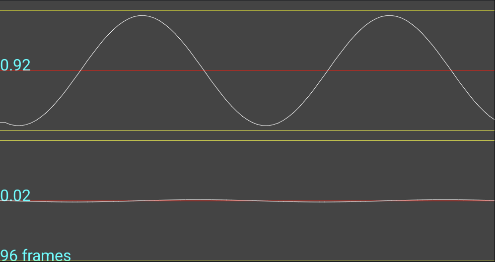
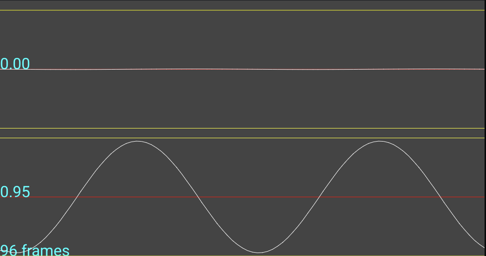

This panel allows you to set levels for loopback signals
The process is as follows:
- Select the input and output devices on which the loopback is executing.
- Click "Left" to play a sine wave on the left channel of the selected output device.
- Use the volume control on the DUT and/or external peripheral to set an appropriate signal level.
- Repeat the process for the right channel.
The signal level for the Left signal should look something like this:

The signal level for the Right signal should look something like this:
